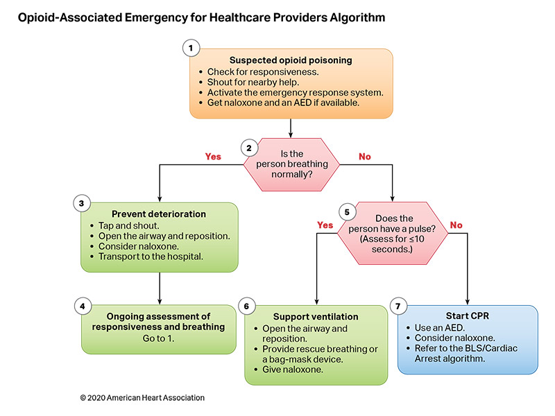
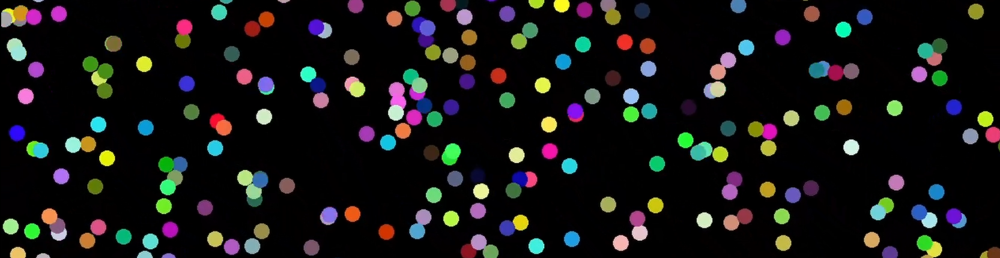

Projetos
Aqui estão alguns dos projetos em que trabalhei a critério de estudo e até mesmo alguns dos meus desafios profissionais independentes. Espero que goste!
Sandbox
Apesar de trabalhar profissionalmente como desenvolvedor web a alguns anos, sei que estou destinado a trabalhar com jogos! Este ano pude começar a realizar alguns protótipos mais ambiciosos na área de jogos digitais. Especiamente em 3D, para começar a ganhar prática nas ferramentas que o mercado solicita. Dediquei-me especialmente no fim do ano a construção de uma gama de protótipos utilizando boas práticas e padrões de projetos no projeto que nomeei de Sandbox (Caixa de Areia).

Nestre projeto, utilizando a Game Engine Godot, em sua versão 4, com a linguagem de programação C#, assets públicos da plataforma Mixamo e Blender para animações e modelagem 3D, foi possível projetar um personagem com movimentação e ponto de vista em terceira pessoa. Busquei utilizar os padrões abordados por Robert Nystrom em game programming patterns como os updates físico e gráfico, máquina de estados finito e componentização. O projeto está em constante evolução e a ideia principal é criar algo que possa realmente ser utilizado em um grande projeto, com as corretas aplicações e otimizações.


Protocolos e Fluxogramas
No começo do ano busquei por projetos que me pudessem ser desafiadores e diferentes. Fui contratado para participar de um projeto voltado a saúde pública, mais especificamente no auxílio de processos que seguiam protocolos e fluxos bem estabelecidos. A ideia consistia em construir, baseado em um arquivo json ou yaml, um gráfico de fluxo para realização de uma determinada ação relacionada a área médica.
O projeto foi verdadeiramente interessante para mim. A apresentação seria feita em React, oque me deu a oportunidade de aprender uma nova tecnologia. Tive também a grata oportunidade de colocar meus conhecimentos matemáticos em prática novamente, para posicionamento dos gráficos, elaboração de formas geométricas e afins. Devido a outras oportunidades emergentes precisei seguir outro caminho que não se alinhavam com os do projeto.
Pixi JS, Electron and Math ❤️
Neste projeto a ideia era testar algumas bibliotecas e frameworks para entender se elas poderiam atender a propósitos mais complexos. Na época, havia acabado a graduação e estava procurando algo mais profundo para fazer em paralelo ao trabalho. Escolhi fazer uma aplicação com um pouco de Matemática para testar a performance da biblioteca javascript Pixi Js. Aproveitei para experimentar também o framework Electron, responsável por viabilizar aplicações web em contextos de desktop. Na aplicação circulos são gerados e movimentados aleatoriamente pela tela. Estes tem inicialmente a cor branca mas ao colidirem uns com os outros as cores mudam, resultando no efeito demonstrado na imagem.
Tanks Vs Spiders

Tanks Vs Spiders é um jogo tiro top down com elementos de estratégia em tempo real. Foi um projeto feito na Godot Engine 3.5 utilizando-se de sua linguagem de programação própria GD Script. Suas mecânicas e estéticas foram inspiradas em jogos de minha infância como Battle City e Phanthom Spider. No jogo é possível controlar um tanque de guerra e combater aranhas gigantes alienígenas mutantes enquanto ganha poderes especiais para lutar.